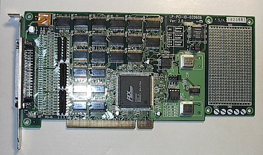
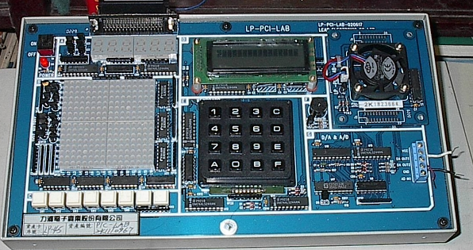
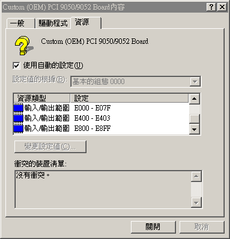
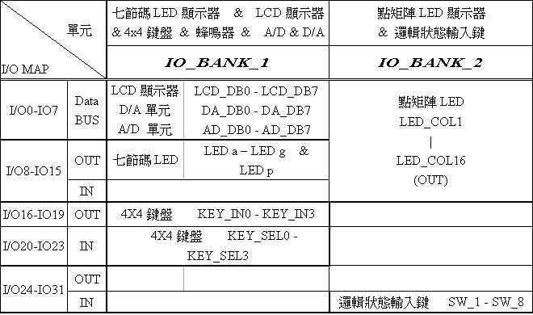
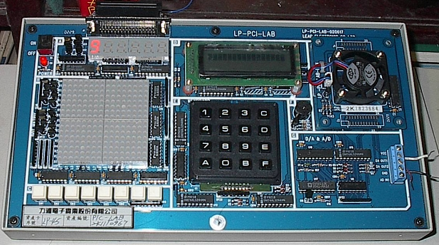

Man-Machine Interfaces
Peripheral Component Interconnect (PCI)
$author: Ching-Wen (Ed) Lai
$date: May. 2003
$revised: Mar. 2018
$keywords: man, machine, interface, peripheral component interconnect, pci
An exercise of PCI interface control by Assembly.
Content
Concept
ISA的缺點就是可能會發生I/O Port衝突的問題, 最深刻的印象就是在DOS時代, 玩遊戲有時後會出現，聲霸卡與其它ISA卡位址衝突，而需特別手動調整聲霸卡或其它ISA卡的I/O位置.PCI的出現，而透過電腦自動與PCI卡指定PCI介面卡I/O或Memory位置.PCI自動指定I/O或Memory位置, 主要是透過以下兩個 I/O Port來得到動態 I/O address.
| I/O Port Address | Name |
|---|---|
| 0x0cf8 | PCI CONFIG Address Port |
| 0x0cfc | PCI DATA Port |
- 但在此次的練習為了方便起見,
Leap PCI Target Board還是以固定IO為主.
Requirements
- Microsoft Windows ME
- Microsoft MASM (Macro Assembler)
- Leap PCI Card and Target Board
Hardware
-
PCI Card - Front View (Master)
 -
PCI Card - Rear View (Master)

-
Leap PCI Target Board

Software
-
安裝
-
將
Leap PCI card插入 電腦主機的PCI Solt內, 重開機後
OS 會提示已經發現下列硬體 –PCI Early non-VGA Device. -
選擇
指定驅動程式的位址(進階)(S)安裝裝置驅動程式。
適當的選擇驅動程式的位址(\Win32\Driver\Wdn),並點選『下一步』。

-
安裝後出現上面視窗,點選
完成,完成安裝驅動程式。

-
開啟
開始/ 設定/ 控制台/ 系統/ 硬體/ 裝置管理員, 點選其他裝置/ Custom(OEM) PCI 9050/9052 Board即可查看該裝置內容。

-
輸入輸出範圍
 -
每台電腦上的裝置內容不盡相同,我電腦上的裝置內容整理如下
| 中斷要求 | 10 |
|---|---|
| 記憶體範圍 | EE021000-EE02107F |
| 記憶體範圍 | EE000000-EE01FFFF |
| 輸入輸出範圍(最低 I/O) | E000-E07F |
| 輸入輸出範圍(次低 I/O) | E400-E403 |
| 輸入輸出範圍(最高 I/O) | E800-E8FF |
- Leap PCI 裝置可用的 裝置 I/O 定義為


Programming
- 以下程式以控制七段顯示器的上數. 七段顯示器位址線位於 IO_Bank_1 IO-8~15, 資料線位於IO_Bank_1 IO-40~47, 透過與 Base 的加權,即可找出相對應的位址。
MODEL SMALL
.386
.STACK
.DATA
IO_PORT0 EQU 0E811H ; io_bank_1 io-8~15
IO_PORT1 EQU 0E815H ; io_bank_1 io-40~47
OUT_DISABLED EQU 0E808H ; io_bank_0
IO_PORT0D EQU 0E800H ; io_bank_0
IO_PORT1D EQU 0E804H ; io_bank_0
.CODE
BEGIN:
PUSH DS
MOV AX,0
PUSH AX
MOV AX,@DATA
MOV DS,AX
DISP_BEGIN:
MOV DX,IO_PORT1 ;第一個七段碼亮
MOV AX,0005H ;0000-0005 不同位址輸出
OUT DX,AX
CALL COUNT_7SEG
CALL WAIT_1S
MOV AH,0BH ;按任意鍵結束程式
INT 21H ;中斷向量21h
CMP AL,0FFH
JNZ DISP_BEGIN
JMP EXIT ;程式結束
COUNT_7SEG: ;顯示0~9數字
MOV DX,IO_PORT0 ;顯示 O
MOV AX,003FH ;0011_1111
OUT DX,AX
CALL WAIT_1S
MOV DX,IO_PORT0 ;顯示 1
MOV AX,0006H ;0000_0110
OUT DX,AX
CALL WAIT_1S
MOV DX,IO_PORT0 ;顯示 2
MOV AX,005BH ;0101_1011
OUT DX,AX
CALL WAIT_1S
MOV DX,IO_PORT0 ;顯示 3
MOV AX,004FH ;0100_1111
OUT DX,AX
CALL WAIT_1S
MOV DX,IO_PORT0 ;顯示 4
MOV AX,0066H ;0110_0110
OUT DX,AX
CALL WAIT_1S
MOV DX,IO_PORT0 ;顯示 5
MOV AX,006DH ;0110_1101
OUT DX,AX
CALL WAIT_1S
MOV DX,IO_PORT0 ;顯示 6
MOV AX,007DH ;0111_1101
OUT DX,AX
CALL WAIT_1S
MOV DX,IO_PORT0 ;顯示 7
MOV AX,0007H ;0000_0111
OUT DX,AX
CALL WAIT_1S
MOV DX,IO_PORT0 ;顯示 8
MOV AX,007FH ;0111_1111
OUT DX,AX
CALL WAIT_1S
MOV DX,IO_PORT0 ;顯示 9
MOV AX,006FH ;0110_1111
OUT DX,AX
CALL WAIT_1S
RET
WAIT_1S:
MOV BX,0007FH
WAIT_LOOP:
CALL WAIT_1MS
DEC BX
CMP BX,0000H
JBE WAIT_1S_EXIT
LOOP WAIT_LOOP
WAIT_1S_EXIT:
RET
WAIT_1MS:
MOV CX,03FFFH
WAIT_LOOP1:
MOV BX,BX
MOV BX,BX
MOV BX,BX
MOV BX,BX
MOV BX,BX
MOV BX,BX
MOV BX,BX
LOOP WAIT_LOOP1
RET
EXIT:
MOV DX,OUT_DISABLED ;清除所有設定。
MOV AX,0000H
OUT DX,AX
MOV DX,IO_PORT0D
MOV EAX,00000000H
OUT DX,EAX
MOV DX,IO_PORT1D
MOV AX,0000H
OUT DX,AX
MOV AH,4CH
INT 21H
END BEGIN
Running
- 使用
MASM編譯程式碼
C:\MASM\ML 7SEG-1.TXT - 執行之後產成 OBJ 與 EXE 檔, 直接執行
C:\MASM\7SEG-1 - 即可看到 7-SEG 群 的左側第一個由 0 開始往上數至9, 並且一直循環.

Advanced
- PCI Host
- PCI Bridge